Diagramas de flujo
Qué es un diagrama de flujo?
Un diagrama de flujo es un diagrama que describe un proceso, sistema o algoritmo informático. Se usan ampliamente en numerosos campos para documentar, estudiar, planificar, mejorar y comunicar procesos que suelen ser complejos en diagramas claros y fáciles de comprender.
Figuras
Símbolo de Inicio / Final
El símbolo de terminación marca el punto inicial o final del sistema. Por lo general, contiene la palabra "Inicio" o "Fin".
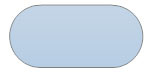
Símbolo de Acción o Proceso
Un rectangulo solo puede representar un solo paso dentro de un processo ("agregar dos tazas de harina"), o un subproceso completo ("hacer pan") dentro de un proceso más grande.
Símbolo del Documento Impreso
Un documento o informe impreso.
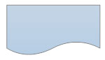
Símbolo de Multidocumento
Representa multidocumento en el proceso
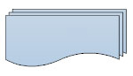
Símbolo de Decisión o Ramificación
Un punto de decisión o ramificación. Las líneas que representan diferentes decisiones surgen de diferentes puntos del diamante.
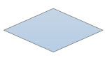
Símbolo de Entrada / Salida
Representa el material o la información que entra o sale del sistema, como una orden del cliente (entrada) o un producto (salida).
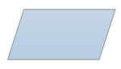
Símbolo de Entrada Manual
Representa un paso en el que se pide al usuario que introduzca la información manualmente.
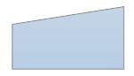
Símbolo de Preparación
Representa un ajuste a otro paso en el proceso
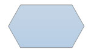
Símbolo del Conector
Indica que el flujo continúa donde se ha colocado un símbolo identico (que contiene la misma letra).
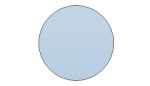
O Símbolo
Indica que el flujo del proceso continúa en más de dos ramas.

Símbolo de Unión de Invocación
Indica un punto en el diagrama de flujo en el que múltiples ramificaciones convergen de nuevo en un solo proceso.
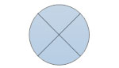
Símbolo de Fusión
Indica un paso en el que dos o más sub-listas o subprocesos se convierten en uno.
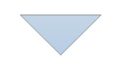
Almacenamiento de Datos o Símbolo de Datos Almacenados
Indica un paso donde se almacenan los datos.
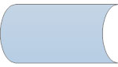
Símbolo de la Base de Datos
Indica una lista de información con una estructura estándar que permite buscar y ordenar.
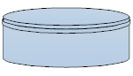
Símbolo de Almacenamiento Interno
Indica que la información se almacenó en la memoria durante un programa, utilizado en diagramas de flujo de diseño de software.
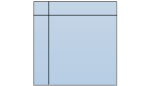
Símbolo de Visualización
Indica un paso que muestra información.
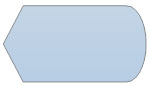